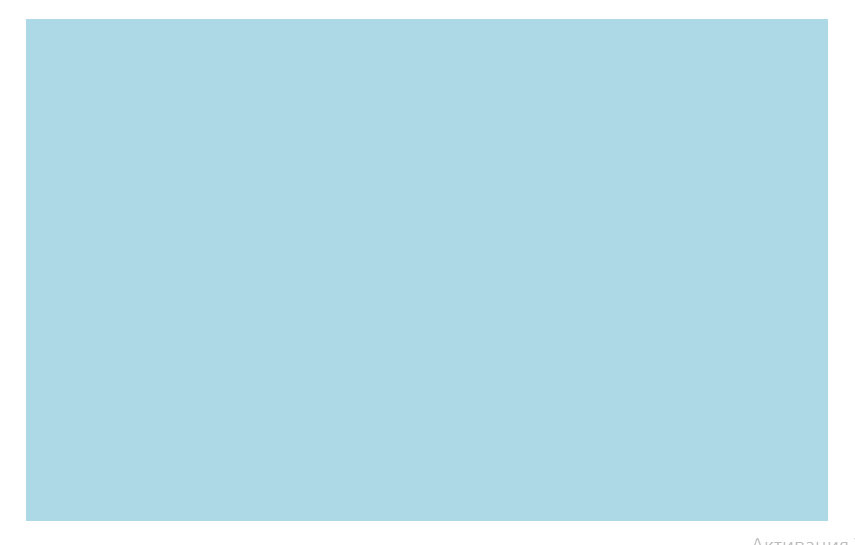

canvas
This is an HTML5 element which can be used to draw graphics via scripting (usually JavaScript) on the fly.
Examples
- draw graphs
- combine photos
- animations
Let’s start!
Basic usage of canvas
To start a canvas project, we will need an HTML file and a Javascript file
Canvas attributes: width and height are optional
You don’t see anything on the page because the canvas is an invisible element.
Let’s add some style with CSS:
style.css
#first-canvas {
border: 1px solid lightblue;
position: absolute;
top: 30px;
left: 0;
right: 0;
bottom: 0;
background-color: lightblue;
}
Here is a result
script.js
const draw = () => {
// Get canvas-element
const canvas = document.getElementById('first-canvas');
// Checking for support
if(canvas.getContext) {
// Get a context from the canvas
const ctx = canvas.getContext('2d');
} else {
console.log('canvas is not supported');
}
}
document.body.addEventListener('load', draw());
The canvas grid
Draw elements to a canvas
We have several methods to do so. We can draw:
- rectangles
- lines
- paths
- text
- images
- animation
Drawing rectangles
ctx.fillStyle = 'orange'; // property which change a fill color
ctx.fillRect(215, 190, 220, 220); // draw rectangle - x, y, width, height
ctx.fillStyle = 'violet';
ctx.fillRect(280, 250, 40, 40);
ctx.fillRect(325, 250, 40, 40);
ctx.fillRect(280, 295, 40, 40);
ctx.fillRect(325, 295, 40, 40);
ctx.strokeStyle = 'tomato'; // property which change a stroke color
ctx.strokeRect(280, 250, 85, 85);
result
Drawing a triangle
ctx.beginPath(); // create a new path
ctx.fillStyle = 'tomato'; // set a color
ctx.moveTo(215, 190); // set the first point
ctx.lineTo(325, 50); // draw the first line
ctx.lineTo(435, 190); // draw the second line
ctx.fill(); // draw a solid shape by filling the path's content area
Drawing quadratic curves
ctx.beginPath();
ctx.fillStyle = 'green';
ctx.moveTo(0, 500); //start
ctx.quadraticCurveTo(250, 300, 800, 500); // 250, 300 - control point; 800, 500 - end point
ctx.fill(); // default color - black

Drawing a circle
// draw circle
ctx.beginPath();
ctx.fillStyle = 'yellow';
ctx.arc(650, 80, 50, 0, 360, false); // arc(x, y, radius, startAngle, endAngle, anticlockwise)
ctx.fill();
// draw lines
ctx.beginPath();
ctx.strokeStyle = 'yellow';
ctx.lineWidth = 5;
ctx.lineCap = 'round';
ctx.moveTo(590, 80);
ctx.lineTo(540, 80);
ctx.stroke();
ctx.moveTo(600, 130);
ctx.lineTo(540, 160);
ctx.stroke();
ctx.moveTo(650, 150);
ctx.lineTo(650, 200);
ctx.stroke();
ctx.moveTo(700, 120);
ctx.lineTo(750, 150);
ctx.stroke();
ctx.moveTo(720, 80);
ctx.lineTo(770, 80);
ctx.stroke();
Text
Drawing text is similar to rectangles. You have 2 methods
- fillText(text, x, y)
- strokeText(text, x, y)
ctx.clearRect(0, 0, 800, 500);
ctx.font = '148px Courier New';
ctx.fillStyle = "red";
ctx.fillText('Canvas', 100, 150);
ctx.strokeStyle = "violet";
ctx.strokeText('Canvas', 150, 300);
Work with images
ctx.drawImage(image, dx, dy);
ctx.drawImage(image, dx, dy, dWidth, dHeight);
ctx.drawImage(image, sx, sy, sWidth, sHeight, dx, dy, dWidth, dHeight);

Image credits: https://cheezburger.com/4406785536/classic-valentines-day-lover

script.js
const ctx = canvas.getContext('2d');
const image = new Image();
image.src = '../pictures/image-with-girl.jpg';
image.onload = () => {
context.drawImage(image, 0, 0);
};
Result
const ctx = canvas.getContext('2d');
const image = new Image();
image.src = './pictures/image-with-girl.jpg';
image.onload = () => {
ctx.drawImage(image, 0, 100, 187, 336, 300, 90, 187, 336);
};
Result
Animation
const canvas = document.getElementById('first-canvas');
const ctx = canvas.getContext('2d');
const MARIO_WIDTH = 32;
const MARIO_HEIGHT = 32;
const mario = new Image();
mario.src = './pictures/mario.png';
let currentFrame = 0;
const update = () => {
ctx.clearRect(0, 0, 800, 500);
ctx.drawImage(
mario,
(MARIO_WIDTH * (Math.floor(currentFrame) % 8)),
0,
MARIO_WIDTH,
MARIO_HEIGHT,
350,
250,
MARIO_WIDTH,
MARIO_HEIGHT
);
currentFrame += 0.2;
requestAnimationFrame(update);
};
update();
result
More examples of using canvas

Example of an HTML canvas project: https://dollarakshay.com/particles.html
Example of an HTML canvas project: https://humaan.com/blog/canvas-swarm-javascript/
Sources:
https://www.w3schools.com/graphics/canvas_intro.asp https://www.youtube.com/channel/UC9Yp2yz6-pwhQuPlIDV_mjA